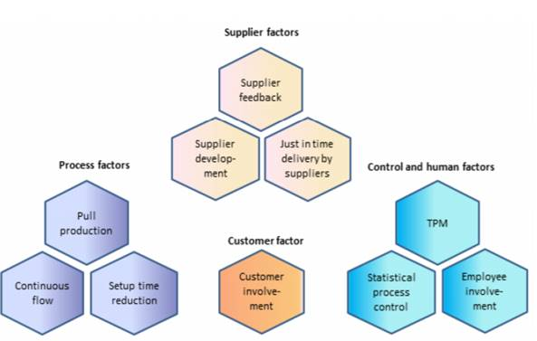
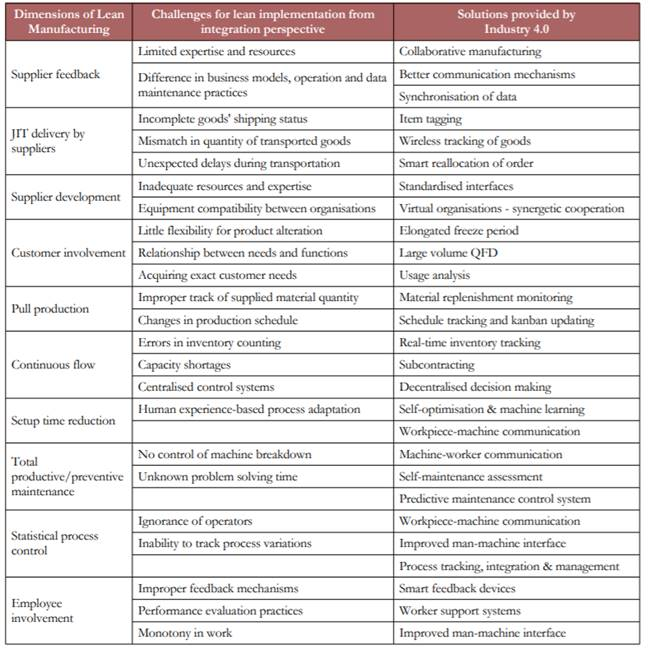

Smart als Next Level Lean
Als casus heb ik gekozen om de fabriek van Scania vrachtwagens in Nederland te kiezen. Scania is een Zweeds bedrijf dat gespecialiseerd is in het produceren van vrachtwagens. Scania heeft in Nederland een vrachtwagen fabriek in Zwolle. De fabriek in Zwolle staat bekend als een echte Lean fabriek(van Ede, 2019). In het 2e jaar van mijn studie hebben we hier in het kader van Lean een bedrijfsbezoek gedaan.
Om een passende casus te vinden is er gezocht op verschillende termen, zoals: 'Smart Industry Lean', Smart Industry bedrijven', 'Smart Industry fabrieken' en 'Lean fabrieken'. Na nog wat variaties op deze zoektermen werden er weinig tot geen geschikte casussen gevonden. Voornamelijk werden er websites gevonden met informatie over deze onderwerpen of onderzoeken over deze onderwerpen. Er is gezocht via Google Scholar en Google. Aangezien er geen geschikte casussen waren gevonden is er gekeken naar eigen kennis. Zoals eerder al vermeld is er in het 2e jaar een bezoek gebracht aan Scania, die in een Lean fabriek hebben.
Om geschikte en bruikbare bronnen te vinden is er gezocht op Google Scholar. Als zoektermen zijn vergelijkbare termen gebruikt als bij het zoeken naar een casus. Een van de meest gebruikte bronnen voor dit onderzoek is Adam Sanders, Chola Elangeswaran en Jens Wulfberg (2016). In dit onderzoek is er gekeken naar de verbanden tussen Industry 4.0, ook wel Smart Industry genoemd, en Lean manufacturing. Dit onderzoek is door het gerenommeerde en onafhankelijke ZBW uitgevoerd. Dit artikel is 379 keer geciteerd, dit geeft ook aan dat het een betrouwbaar artikel is. Om er achter te komen of het artikel bruikbaar is, is de samenvatting gelezen en door middel van de zoekfunctie gezocht naar relevante begrippen. Via de literatuurlijst van deze bron zijn meer relevante bronnen gevonden die gebruikt zijn voor dit onderzoek.
Zoals in de inleiding al naar voren is gekomen is de fabriek van Scania in Zwolle de casus. De desbetreffende fabriek maakt vrachtwagens vanaf het chasis tot een rijdende vrachtwagen. Scania is bezig met de ontwikkelingen rondom Smart Industry. Volgens Van Ede (2019) zegt Scania het volgende hierover:
'In Zweden is er een werkgroep die zich hiermee bezig houdt.Smart Industry zien wij als een techniek die in dienst van Lean moet staan. Of je nu productiestappen robotiseert of niet, er blijven een reeks stappen nodig om een vrachtwagen te assembleren. Die moet je goed op elkaar afstemmen, en dat doe je met Lean. Wel veranderen de benodigde vaardigheden in een smart fabriek. Zowel de operators als de monteurs moeten steeds meer softwarekennis hebben.'
Scania is al bezig met Smart Industry voordat deze term een echt begrip was. Dit komt door de toenemende digitalisering binnen de fabriek, er is nu een zogeheten 'digitale schaduwfabriek'. In deze digitale schaduwfabriek kan veel informatie dat vrij komt door de digitalisering uitgelezen en gemonitord worden. Ze noemen dit bij Scania ook wel een zelfbewuste fabriek (van Ede, 2019).
Voorbeelden van digitalisering en mechanisering binnen de fabriek zijn het gebruik van geautomatiseerd gereedschap. Elke productiestap wordt gestart en geëindigd met het scannen van een barcode. Zo kan er altijd gezien worden waar onderdelen zijn en of de productiestap klaar is. Het gereedschap stuurt digitaal door wat er gebeurd is met het gereedschap. Hierdoor kan automatisch vergeleken worden hoe dit in het verleden is gebeurd. Dit zorgt ervoor dat afwijkingen snel aan het licht komen en het productieproces geblokkeerd wordt. Hiermee wordt voorkomen dat foute of kappoten onderdelen verder in het productieproces belanden.
De Smart Industry bij Scania gaat zelfs een stukje verder, de geavanceerde software in de vrachtwagens kan zelf controleren of onderdelen op de juiste manier zijn geassembleerd. Als dit het geval is kunnen de volgende onderdelen erop. Als de onderdelen niet juist zijn gemonteerd dan geeft de vrachtwagen een signaal dat er iets niet goed zit.
In de casus is uitgelegd en beschreven wat Scania al doet aan Smart Industry en Lean, nu zal er naar de theorie/literatuur gekeken worden.
Lean manufacturing kan worden omschreven als productieaanpak dat bestaat uit meerdere facetten waarbij industriële toepassingen worden ingezet om waard toevoegende processen te herkennen vanuit het oog van de klant. De centrale gedachte van Lean is om een gestroomlijnd productieproces te hebben dat afgesteld is op de wensen van de klant waarbij zo min mogelijk verspillingen zijn (Shah & Ward, 2007). Shah en Ward (2007) hebben een model gecreëerd wat bestaat uit 10 elementen waardoor de structuur van Lean Manufacturing kan worden geïdentificeerd. Deze tien elementen worden weer onderverdeeld over vier factoren. De 10 elementen en de vier factoren zijn te zien in het onderstaande model.

Voor alle 10 de elementen zijn door Sanders, Elangeswaran en Wulfsberg (2019) ook oplossingen opgesteld om deze elementen toe te passen binnen een organisatie. Dit staat beschreven in het onderstaande figuur.

Sanders, Elangeswaran en Wulfsberg (2019) beschrijven dat autonome fabrieken en of robots iets voor de toekomst is van Lean manufacturing in combinatie met Smart Industry. Zelflerende robots nemen dan steeds meer taken over van de fabrieksmedewerkers. Hierdoor wordt het proces minder fout gevoelig en hoeft de mens alleen nog in te grijpen wanneer er bijzonderheden of fouten uit het systeem naar voren komen.
Wanneer de casus en de literatuur met elkaar vergeleken wordt valt er op dat Scania al erg ver is met Lean Manufacturing. Scania is al erg bezig met de 10 elementen van Lean Manufacturing en dit gaat dan ook erg goed. Alle elementen zijn niet los behandeld in dit artikel, deze informatie is onder andere te vinden op de website van Scania of wordt gegeven bij een bedrijfsbezoek. Er liggen echter nog wel kansen voor Scania bij het onderwerp autonome fabrieken. Bij Scania wordt veel gewerkt door middel van technologie in combinatie met mensen. Om de fabriek nog meer Smart te maken kan er worden gekozen om deze mensen te vervangen voor robots die het werk doen. De mens zal dan meer een controlerende factor spelen.
Van Ede, J. (6 mei, 2019). Zelfbewuste fabriek trekt aan Andon-koord. Geraadpleegd op 20 september 2020, van https://www.procesverbeteren.nl/LEAN/Scania_Jidoka.php
Sanders, A., Elangeswaran, C. & Wulfsberg, J. (maart, 2016).
Industry 4.0 Implies Lean Manufacturing: Research
Activities in Industry 4.0 Function as Enablers for Lean Manufacturing. Geraadpleegd op 20 september 2020, van https://www.econstor.eu/bitstream/10419/188791/1/v09-i03-p0811_1940-8953-1-PB.pdf
Shah, R., & Ward, P.T. (2003). Lean manufacturing:
context, practice bundles, and performance. Journal of operations management, 21(2),
129-149. http://dx.doi.org/10.1016/S0272-6963(02)00108-0 Shah, R., & Ward, P.T. (2007). Defining and developing
measures of lean production. Journal of operations management, 25(4), 785-805.
http://dx.doi.org/10.1016/j.jom.2007.01.019